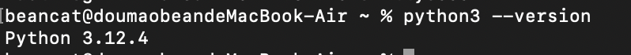
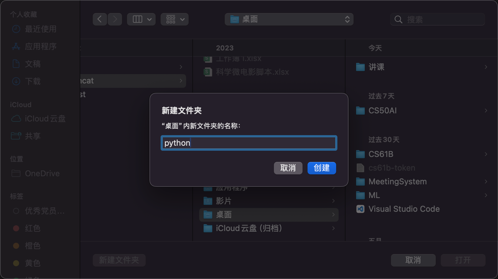
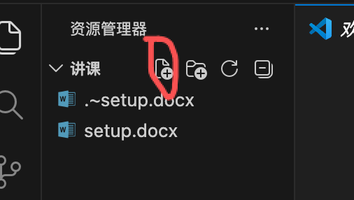
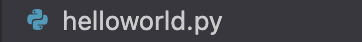
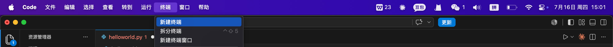
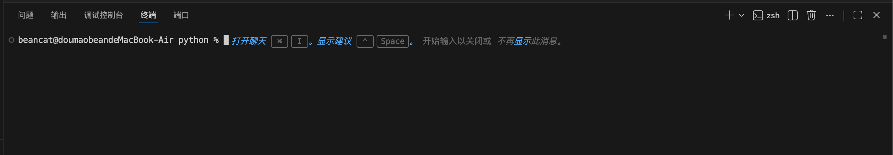
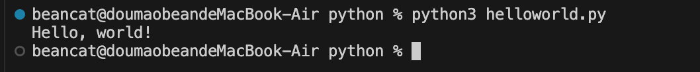

Lab 0 Setup
一、检查 Python 是否安装成功以及版本
键盘按 ⌘ + Space。
输入 terminal，打开终端。
输入 python3 --version，检查 Python 版本（新版本 macOS 自动安装 Python 3）。

图 1 — 终端中检查 Python 版本打开 VS Code，尝试新建 .py 文件并运行
打开 VS Code。
点击打开文件夹，在桌面新建一个文件夹，命名为 python。创建完成后打开。

图 2 — 在 VS Code 中打开文件夹在屏幕左上角找到这个按钮，并点击。

图 3 — 点击新建文件按钮新建文件命名为 helloworld.py（注意不要漏了后缀名 .py）。

图 4 — 命名为 helloworld.py点击这个文件，在右侧编辑区域输入代码。
# helloworld.py
print("Hello, world!")
在屏幕顶部找到任务栏，点击 终端 → 新建终端。

图 5 — 在菜单栏中打开终端可以在下侧看到这样的一栏，称为终端（Terminal）。

图 6 — VS Code 底部的终端面板在终端输入
$ python3 helloworld.py
并回车运行。
可以看到终端中出现这样的样式，则环境配置成功。

图 7 — 运行成功
环境配置成功！你已经完成了 Python 开发环境的搭建。